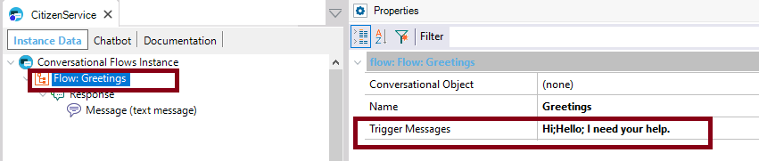
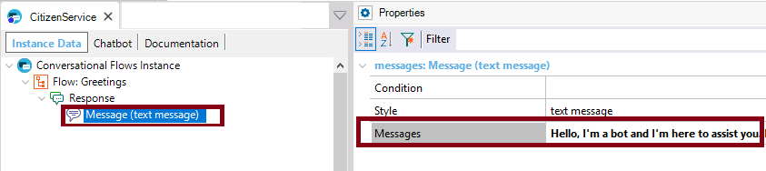
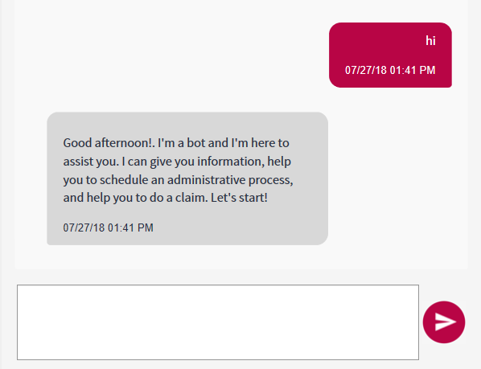

The conversation with the robot will begin as soon as the user enters some keywords or expressions that the Artificial Intelligence (AI) service understands to be his intention to talk. Those utterances may be taken from the Trigger Messages of the Greetings Flow, which is predefined.  As a consequence of the Triggers Messages, the chatbot replies to the user using any of the Messages specified in the definition of the chatbot.  If there is more than one, the Messages are selected randomly by the AI service intelligence. So, the web chatbot may look as follows when the conversation starts:  Note that, in fact, any of the intents related to the Conversational Flows object can be detected at first, the Greetings doesn't need to be the start of the conversation. The default messages can also be configured in the Conversational Configuration (see Conversational Flows pattern settings).
|
| Backlinks |
| Toc:Chatbots in GeneXus |